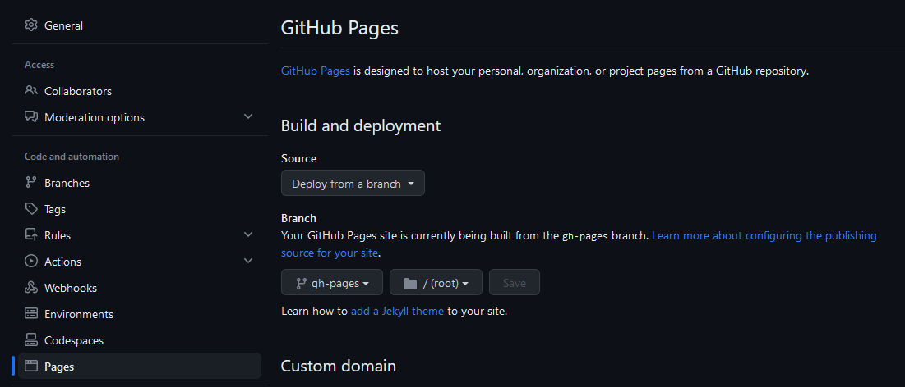

In github (also in gitlab of course) you can create actions (for github) and pipelines (for gitlab) to automate some passages. What can be achieved is the possibilities to build the documentation ad every commit automatically.
setup git
ssh-keygen -t ed25519 -C "Jakkins@hotmail.it"
cat /home/j/.ssh/id_ed25519.pub
# copy the public key and put it into
# https://github.com/settings/ssh/new
clone static page repo
git clone git@github.com:Jakkins/jakkins.github.io.git
setup theme
cd jakkins.github.io.git
rm -r ./*
# download the theme (submodule repo) inside this repo
# jakkins.github.io
# dark_enhanced_dirtree
git clone git@github.com:Jakkins/dark_enhanced_dirtree.git
git submodule add -b main git@github.com:Jakkins/dark_enhanced_dirtree.git ./dark_enhanced_dirtree
git submodule init
git submodule update
git push --recurse-submodules=check
From now on you clone this repo with a command to automatically clone also submodule, like that:
git clone --recurse-submodules -j8 git@github.com:Jakkins/jakkins.github.io.git
setup static page folder
Move static page folder up one level:
cp -r ./dark_enhanced_dirtree/my_static_pages/ .
nano ./my_static_pages/mkdocs.yml
# modify the mkdocs project to link the theme configuration to the custom theme
theme:
name: null
custom_dir: "../dark_enhanced_dirtree/dark_enhanced_dirtree"
setup github action
https://docs.github.com/en/actions/quickstart/ https://github.com/marketplace/actions/checkout-submodules/
mkdir -p .github/workflows
nano .github/workflows/main.yml
action example 1
name: build mkdocs
on:
push:
branches: [ main ]
jobs:
test_pull_request:
runs-on: ubuntu-latest
steps:
- uses: actions/checkout@v2
- uses: actions/setup-python@v4
with:
python-version: '3.10'
- run: pip install mkdocs
- run: python -m mkdocs build -f ./my_static_pages/mkdocs.yml --clean
# - run: mkdocs gh-deploy --force --clean --verbose
action example 2
name: Deploy Docs
on:
push:
branches:
- main
jobs:
build-deploy:
name: Build and deploy docs
runs-on: ubuntu-latest
steps:
- name: Checkout 🛎️
uses: actions/checkout@v2
- name: Set up Python 3 ⚙️ 🐍
uses: actions/setup-python@v2
- name: Install dependencies 🔧
run: |
pip install --upgrade pip
pip install mkdocs mkdocs-dark-enhanced-dirtree mkdocs-mermaid2-plugin
pip install --upgrade mkdocs-dark-enhanced-dirtree
# Repository -> Settings -> Actions -> General -> Workflow permissions ==> select Read and write permissions
- run: git config user.name 'github-actions[bot]' && git config user.email 'github-actions[bot]@users.noreply.github.com'
- name: Build and deploy to GitHub Pages 🏗️ 🚀
run: mkdocs gh-deploy --force
remember to change on settings from where pages will be loaded "mkdocs gh-deploy" will deploy in a branch named "gh-pages" so you have to load the pages from this branch
